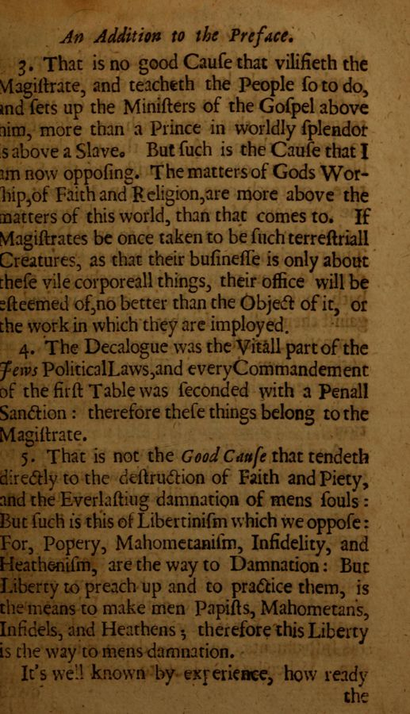

“Therefore this Liberty is the way to mens damnation”
English: London 1659, “An Addition to the Preface”, scan. Long s modernised. Highlighted: Lecky’s quotation.

3. That is no good Cause that vilifieth the Magistrate, and teacheth the People so to do, and sets up the Ministers of the Gospel above him, more than a Prince in worldly splendor is above a Slave. But such is the Cause that I am now opposing. The matters of Gods Worship, of Faith and Religion, are more above the matters of this world, than that comes to. If Magistrates be once taken to be such terrestriall Creatures, as that their business is only about these vile corporeall things, their office will be esteemed of no better than the Object of it, or the work in which they are imployed.
4. The Decalogue was the Vitall part of the Jews Political Laws, and every Commandement of the first Table was seconded with a Penall Sanction: therefore these things belong to the Magistrate.
5. That is not the Good Cause that tendeth directly to the destruction of Faith and Piety, and the Everlasting damnation of mens souls: But such is this of Libertinism which we oppose: For, Popery, Mahometanism, Infidelity, and Heathenism, are the way to Damnation: But Liberty to preach up and to practice them, is the means to make men Papists, Mahometans, Infidels, and Heathens; therefore this Liberty is the way to mens damnation.
It’s well known by experience, how ready the multitude of ignorant, unsetled and proud people are to be led into any damning course, if they be dealt with by men of voluble tongues …
Backlinks
Every place in Rationalism in Europe that links to this page (generated automatically when the site is built).
- Chapter IV, Part II: note 86